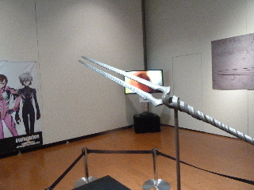
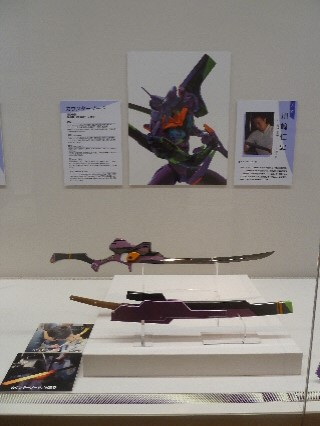
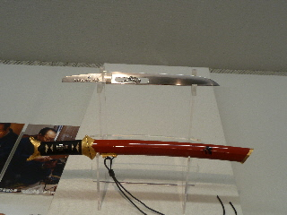
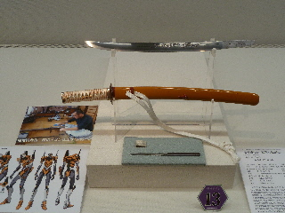
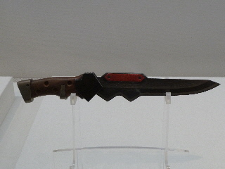
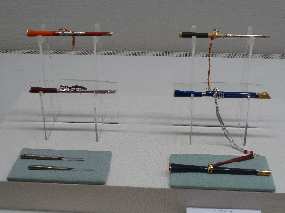
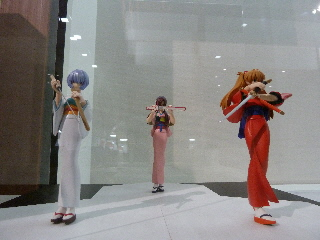
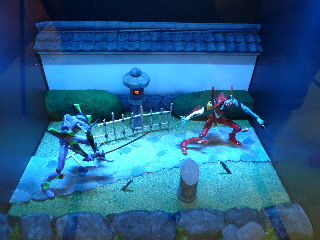
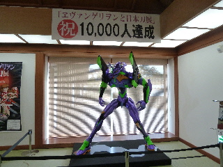

エヴァンゲリヲンと日本刀展で写真を沢山撮りました。
2014/12/28
写真OKの展示ってあるんですね。
松江歴史館での「エヴァンゲリヲンと日本刀展」は写真OKだったので、記念に沢山写真を撮りました。









松江歴史館でお客さんが沢山いるのを初めて見ました。
エヴァンゲリヲンの力は偉大ですね。
ファンの方が熱心に語りながら見ておられたので、会場に活気がありました。
私はそんなにファンじゃないですが、綺麗な日本刀が沢山見れて良かったです。